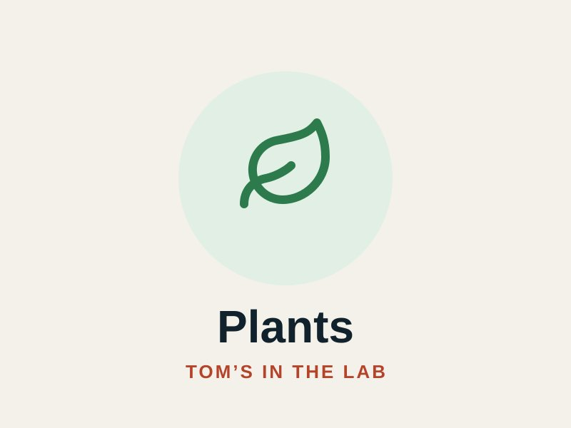

Plants
Client
Personal project
Date
2026
Project link
A private houseplant journal I run mostly through AI chat. Snap a photo and say “add this as my living-room Monstera”, log watering in plain words, and get soil recipes built from what is actually on my shelf.

Project Overview
- Real records behind the chat — every plant, dated photo timeline, care history, soil supplies and versioned recipes in PostgreSQL; photos in private storage.
- iPhone photos done right — HEIC decoded with libheif (WebAssembly), upright orientation, location data stripped from anything shared.
- Cuttings and gifts — a cutting becomes its own plant linked to its parent; I can see what I’ve given to whom.
- NFC care tags — friends tap a tag on the pot with their phone and get that plant’s care notes. No app, no account.
Built with: Node.js, Express, PostgreSQL, S3-compatible storage, sharp + libheif, OpenAI tool calling, Railway.